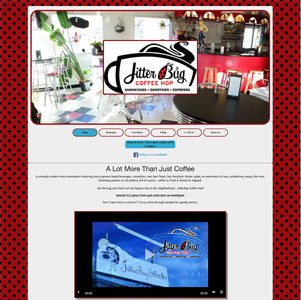
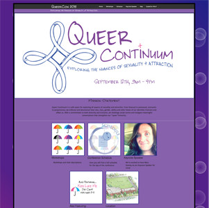
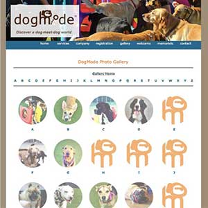
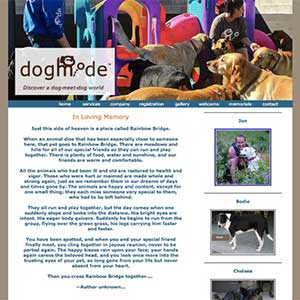
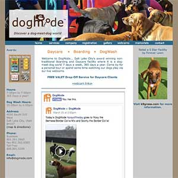
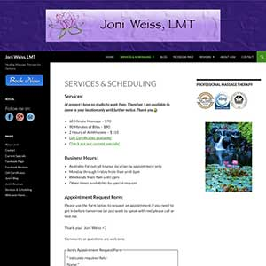

Recent Projects
Take a look around on some recent projects I've been working on. More recent projects are added to the top.

Mobile-responsive site redesign for local coffee shop based on Zurb Foundation and AngularJS

Mobile-responsive site redesign for Utah Pride Center conference event, based on Zurb Foundation and AngularJS

Alphabetized canine photo gallery -- Dogmode client dogs.
Business site in Wordpress (self-hosted) with facebook integration and e-commerce (squareup.com integration).

Memorial pages for dogs who have passed over to the Rainbow Bridge and for one of the owners who has passed away (R.I.P.).

Facebook integration into site landing page.

A WordPress site for a Massage Therapist. This site is self-hosted, with facebook integration. Has had integration with scheduling service "fullslate" but changed to the current form-based scheduling. Take a look around!
© 2014 Joni Weiss.